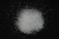

|
|
(For further information on spectroscopy, see:
http://speclab.cr.usgs.gov)
TITLE: Olivine GDS71 Fo91 DESCRIPT
DOCUMENTATION_FORMAT: MINERAL
SAMPLE_ID: GDS71
MINERAL_TYPE: Nesosilicate
MINERAL: Olivine
FORMULA: Mg2SiO4-Fe2SiO4
FORMULA_HTML: Mg2Si4-Fe2SiO4 Fo91
COLLECTION_LOCALITY: Twin Sisters Peak, Washington
ORIGINAL_DONOR: Trude V.V. King
CURRENT_SAMPLE_LOCATION: USGS Denver Spectroscopy Laboratory
ULTIMATE_SAMPLE_LOCATION: USGS Denver Spectroscopy Laboratory
SAMPLE_DESCRIPTION:
Samples were wet-sieved into less than 60µm (b) and 60-104µm (a) size fractions and hand-picked prior to spectral measurements. This sample was derived from a dunite.
King, T.V.V. and W.I. Ridley, 1987, Relation of the Spectroscopic Reflectance of Olivine to Mineral Chemistry and Some Remote Sensing Implications. J. Geophys. Res., 11,457-11,469.
IMAGE_OF_SAMPLE:

END_SAMPLE_DESCRIPTION.
XRD_ANALYSIS:
40 kV - 30 mA, 7.3-9.5 keV
File: oliv71.mdi (smear on quartz plate)
References: PDF2 #34-0189, 31-0795
Found: Forsterite
Comments: Sharp peaks show good resolution of the alpha1-alpha2 components. The
pattern is very similar to that of HS-285.4B, including the shoulders. PDF2
34-0189 (synthetic endmember forsterite) is an excellent match for GDS-71, much
better than 31-0795 (ferroan forsterite). The shoulders could be caused by slight
Fe-Mg zoning.
END_XRD_ANALYSIS.
COMPOSITIONAL_ANALYSIS_TYPE: EM(WDS) # XRF, EM(WDS), ICP(Trace), WChem
| COMPOSITION KEYWORD |
Oxide ASCII |
Amount | Weight Percent, % |
Oxide html |
|---|---|---|---|---|
| COMPOSITION: | SiO2 | 40.06 | wt% | SiO2 |
| COMPOSITION: | TiO2 | 0.14 | wt% | TiO2 |
| COMPOSITION: | Cr2O3 | 0.06 | wt% | Cr2O3 |
| COMPOSITION: | FeO | 7.93 | wt% | FeO |
| COMPOSITION: | NiO | 0.28 | wt% | NiO |
| COMPOSITION: | MnO | 0.12 | wt% | MnO |
| COMPOSITION: | MgO | 50.70 | wt% | MgO |
| COMPOSITION: | CaO | 0.06 | wt% | CaO |
| COMPOSITION: | Total | 99.94 | wt% |
COMPOSITION_TRACE:
COMPOSITION_DISCUSSION:
This is a USGS microprobe standard analysis of Twin Sister Peak, Washington, dunite.
King, T.V.V. and W.I. Ridley, 1987, Relation of the Spectroscopic Reflectance of Olivine to Mineral Chemistry and Some Remote Sensing Implications. J. Geophys. Res., 11,457-11,469.
END_COMPOSITION_DISCUSSION.
MICROSCOPIC_EXAMINATION:
This is a pure mineral separate. There are weak 2.3-µm alteration features, The rest of the spectrum rates an a.
END_MICROSCOPIC_EXAMINATION.
SPECTROSCOPIC_DISCUSSION:
END_SPECTROSCOPIC_DISCUSSION.
SPECTRAL_PURITY: 1b2c3b4_ # GDS71.a # 1= 0.2-3, 2= 1.5-6, 3= 6-25, 4= 20-150 microns
SPECTRAL_PURITY: 1b2c3b4_ # GDS71.b # 1= 0.2-3, 2= 1.5-6, 3= 6-25, 4= 20-150 microns
| LIB_SPECTRA_HED: | where | Wave Range | Av_Rs_Pwr | Comment |
|---|---|---|---|---|
| LIB_SPECTRA: | splib04a r 3724 | 0.2-3.0µm | 200 | g.s.= 65 µm |
| LIB_SPECTRA: | splib04a r 3735 | 0.2-3.0µm | 200 | g.s.= 30 µm |
| LIB_SPECTRA: | splib05a r 5090 | 0.2-3.0µm | 200 | g.s.= |
| LIB_SPECTRA: | splib05a r 5103 | 0.2-3.0µm | 200 | g.s.= |
| LIB_SPECTRA: | splib06a r 16520 | g.s.= | ||
| LIB_SPECTRA: | splib06a r 16534 | g.s.= | ||
| LIB_SPECTRA: | splib06a r 16579 | g.s.= | ||
| LIB_SPECTRA: | splib06a r 16624 | g.s.= | ||
| LIB_SPECTRA: | splib06a r 16638 | g.s.= |
{kind=link}